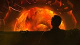
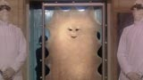
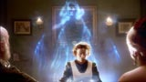
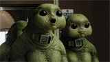
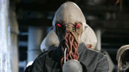
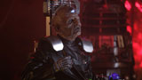
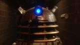
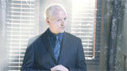
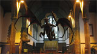

| HOME | Episódios | Galeria de Fotos | Downloads | Jogo | Personagens | Entrevista |
Personagens |
||
|  | A Consciência NesteneA Consciência Nestene está escondida na Terra e controla plástico. Não traz boas notícias para a população do planeta; tampouco se agrada com a intenção do Doutor de colocar um fim nisso. |
|
|  | Cassandra O’BrienZoe WanamakerCassandra é o último ser humano vivo, um ser muito desagradável. Com seus conhecidos gritos de "Hidrate-me, hidrate-me!" você sabe que se ouvi-la, há problemas a caminho. |
|
|  | Os GelthOs Gelth são uma forma de vida feita de gás. Eles causam transtornos quando Rose e O Doutor viajam de volta à Inglaterra Vitoriana e descobrem que os mortos estão voltando à vida. |
|
|  | Os SlitheenOs Slitheen são grandes, verdes e desagradáveis. Eles não gostam de humanos, odeiam os Lordes do Tempo e sofrem de gases terríveis! |
|
|  | Os OodAparentemente nascidos para servir, os Ood trabalham para atender às necessidades da humanidade no futuro distante. Mas sua subserviência é genuína - ou eles são, na verdade, escravos, explorados por uma corporação do mal? |
|
 |
Os CybermenParte homem, parte máquina, alguns dos inimigos mais temíveis do Doutor estão de volta com uma coisa em suas mentes... A atualização definitiva. |
|
|  | DavrosO cientista do mal que criou os Daleks, a fim de garantir a sobrevivência de sua raça e, por fim, o seu domínio sobre toda a criação. |
|
|  | DaleksOs Daleks são os inimigos mais mortais do Doutor. Eles lutaram na Guerra do Tempo e foram todos eliminados, juntamente com os Lordes do Tempo, mas como o Doutor descobre, assim como ele, um deles sobreviveu. |
|
|  | O EditorSimon PeggO Editor trabalha no Satélite 5, responsável por todas as transmissões de TV para o Império Terrestre. Mesmo sendo importante como ele é, para quem ele realmente trabalha? |
|
|  | Os ReapersOs Reapers aparecem quando Rose brinca com o tempo enquando o Doutor leva-a de volta para ver o pai. Eles se alimentam da raça humana. |
|
 |
Lobo MauQuem ou o que é o Lobo Mau? Ao longo de todas as suas aventuras, o Doutor e Rose o avistam de canto de olho. O que isso significa e por que está presente por toda a história da Terra? |
|